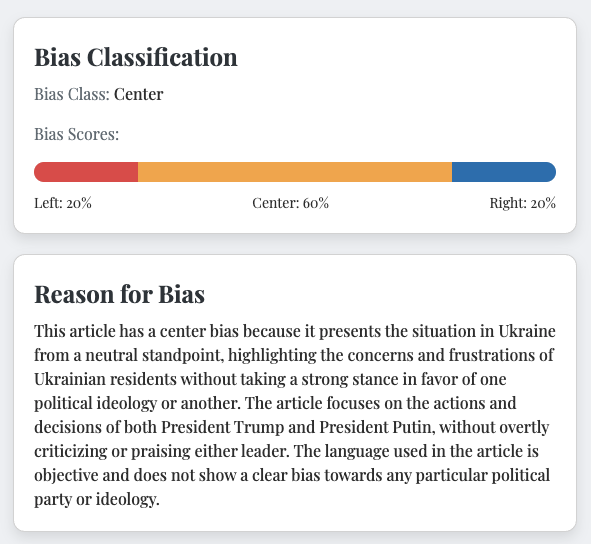

{{ translate_ui("Bias classification with rationale", current_language) }}
{{ translate_ui("Left / center / right, paired with the specific cues that informed the call (framing, sources, wording).", current_language) }}
{{ translate_ui("FairRead analyzes any article for political lean, explains why, and returns a concise summary you can trust.", current_language) }}

{{ translate_ui("FairRead is a lightweight tool for evaluating news articles with clarity and speed. Paste a link, text, or PDF and receive an objective read on where the piece leans.", current_language) }}
{{ translate_ui("Results include a brief rationale so you can see the cues behind the call — not just the label. Your history stays private and helps you understand your own reading patterns over time.", current_language) }}

{{ translate_ui("Capabilities", current_language) }}
{{ translate_ui("Everything you need to judge an article—nothing you don't.", current_language) }}
{{ translate_ui("Left / center / right, paired with the specific cues that informed the call (framing, sources, wording).", current_language) }}
{{ translate_ui("Clear, skimmable summaries that preserve context and map claims to evidence.", current_language) }}
{{ translate_ui("See trends in outlets and perspectives over time—stored locally by default.", current_language) }}
{{ translate_ui("Analyze URLs, pasted text, or PDFs. Robust parsing for long-form pieces.", current_language) }}
{{ translate_ui("Deterministic modes for consistency and clear versioned outputs for sharing.", current_language) }}
{{ translate_ui("Open the Learn tab after analysis to review vocabulary, idioms, and grammar in the article language with English support.", current_language) }}
{{ translate_ui("Getting Started", current_language) }}
{{ translate_ui("Follow three quick steps to analyze any news article with clarity and transparency.", current_language) }}
{{ translate_ui("Enter a", current_language) }} {{ translate_ui("link", current_language) }}, {{ translate_ui("paste the", current_language) }} {{ translate_ui("text", current_language) }}, {{ translate_ui("or upload a", current_language) }} PDF.
{{ translate_ui("FairRead detects political bias, highlights key signals, and summarizes the piece.", current_language) }}
{{ translate_ui("See the bias label, rationale, and a concise summary you can trust.", current_language) }}
{{ translate_ui("Community", current_language) }}
{{ translate_ui("Join focused debate rooms on live topics, compare evidence, and see how perspectives shift—without sacrificing civility or privacy.", current_language) }}
{{ translate_ui("Join curated rooms on specific policy issues. Keep discussions on track with structured prompts and timeboxed rounds.", current_language) }}
{{ translate_ui("Back claims with links or PDFs. FairRead highlights bias signals in cited content so participants can assess sources quickly.", current_language) }}
{{ translate_ui("Moderation tools and private rooms reduce noise. Participation history stays local by default; share only what you choose.", current_language) }}
{{ translate_ui("Each week introduces a new debate prompt with a short neutral brief to frame the discussion.", current_language) }}
{{ translate_ui("Opening statements, evidence posts, and closing remarks keep conversations concise and comparable.", current_language) }}
{{ translate_ui("See a neutral wrap-up: main claims, strongest evidence cited, and perspective shifts over the week.", current_language) }}